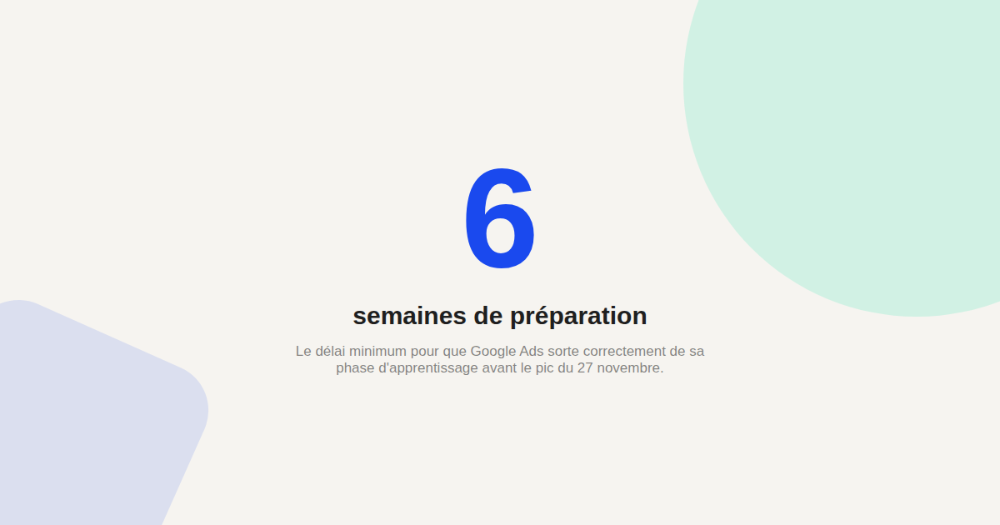
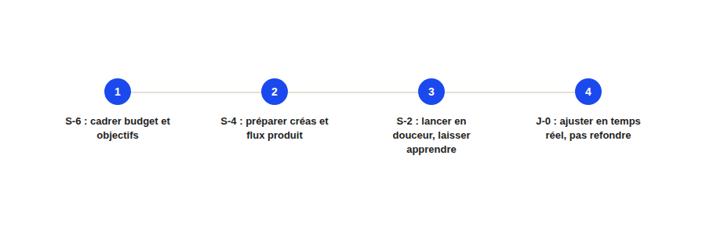

Black Friday 2026 : le calendrier de préparation Google Ads en 6 semaines
Le Black Friday 2026 tombe le 27 novembre. Ce qui distingue les campagnes qui performent le jour J de celles qui improvisent n'est presque jamais la créa ou le budget — c'est le calendrier de préparation, ou son absence.

Le Black Friday 2026 tombe le vendredi 27 novembre. Le réflexe le plus répandu — et le plus coûteux — consiste à préparer les campagnes dans la semaine qui précède, en pensant que le budget et la créa suffiront à faire la différence. Dans les faits, le facteur qui pèse le plus sur la performance du jour J se joue six semaines avant, au moment où on laisse (ou pas) le temps à Google Ads d'apprendre.
Semaine -6 (mi-octobre) : cadrer budget et objectifs
C'est le moment de fixer l'enveloppe budgétaire dédiée au Black Friday, distincte du budget courant, et de définir un objectif de coût par acquisition réaliste basé sur les performances historiques — pas sur un objectif ambitieux fixé à la légère. Un objectif trop agressif fixé tardivement est l'une des causes les plus fréquentes d'une chute de volume en pleine période de forte demande.
Semaine -4 : préparer créas et flux produit
Les créations publicitaires et le flux produit (pour le Shopping) doivent être prêts avec plusieurs semaines d'avance, pas la veille : un flux produit mal préparé (stocks erronés, prix non mis à jour) génère des refus d'annonces ou des incohérences visibles par l'acheteur au pire moment possible. C'est aussi le moment de préparer les déclinaisons de créas pour éviter la saturation publicitaire qui s'installe vite en période de forte pression concurrentielle.
Semaine -2 : lancer en douceur, laisser Google Ads apprendre
Activer les campagnes ou ajustements liés au Black Friday au moins deux semaines avant l'événement permet à l'algorithme d'enchères automatiques de sortir de sa phase d'apprentissage avant le pic de trafic. Lancer une nouvelle campagne ou un changement d'enchère cible la veille du Black Friday revient à faire apprendre l'algorithme en pleine tempête — le pire moment possible pour une phase d'instabilité prévisible.

Semaine -1 : vérification technique, pas nouveauté
La dernière semaine avant le Black Friday ne devrait plus contenir de changement structurel : c'est le moment de vérifier que le tracking de conversion fonctionne correctement sous forte charge, que les pages de destination sont prêtes techniquement (voir notre article sur la vitesse de site sous forte charge), et que les budgets quotidiens sont correctement dimensionnés pour ne pas s'épuiser avant la fin de journée du 27.
Jour J : ajuster, ne pas refondre
Le 27 novembre, la marge de manœuvre se limite à des ajustements tactiques : augmenter un budget qui s'épuise trop vite, mettre en pause une annonce en rupture de stock, surveiller le coût par acquisition en temps réel. Toute refonte structurelle (nouvelle stratégie d'enchère, nouveau ciblage) relance une phase d'apprentissage en plein pic — l'erreur à éviter à tout prix ce jour précis.
Ce qui distingue une équipe préparée d'une équipe qui improvise
La différence ne se joue quasiment jamais sur la qualité de la créa seule : elle se joue sur le respect du calendrier de préparation, en particulier sur le temps laissé à l'algorithme pour apprendre avant le pic. Six semaines paraissent longues en octobre — elles semblent bien courtes le 26 novembre au soir pour qui ne les a pas respectées.
FAQ
Est-il trop tard pour préparer le Black Friday si on s'y prend deux semaines avant ?
Non, ce n'est pas idéal mais c'est encore jouable : privilégiez alors des ajustements progressifs plutôt qu'un changement brutal de stratégie d'enchère, pour limiter l'instabilité d'apprentissage en pleine période de forte demande.
Faut-il un budget spécifique dédié au Black Friday, séparé du budget courant ?
C'est fortement recommandé pour garder une vision claire de la performance de la période et éviter qu'un pic de dépense ne fausse la lecture du budget courant sur le reste du mois.
Le Cyber Monday se prépare-t-il différemment du Black Friday ?
La préparation technique est similaire, mais le Cyber Monday (30 novembre 2026) concerne davantage les produits numériques et high-tech — la répartition budgétaire entre les deux dates mérite d'être pensée dès la phase de cadrage.
Envie d'un accompagnement pour préparer votre Black Friday Google Ads ?
Pour aller plus loin, voir la page SEA, et l'article Smart Bidding.
Pour continuer sur ce sujet.